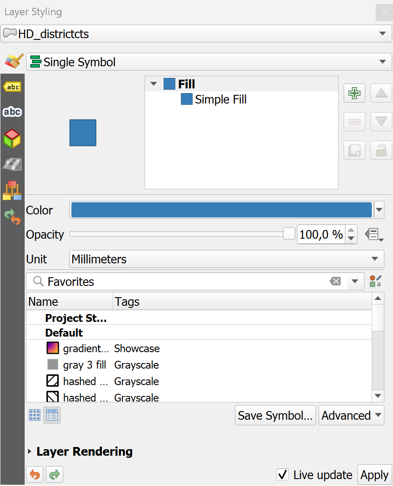
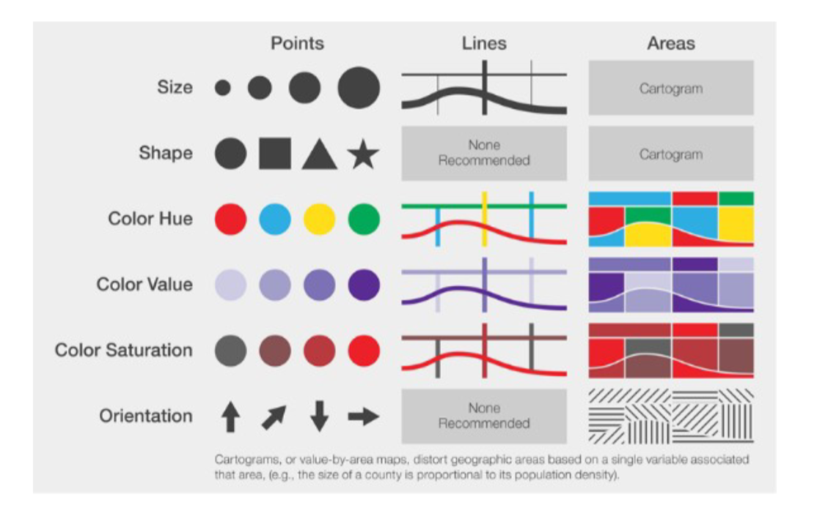
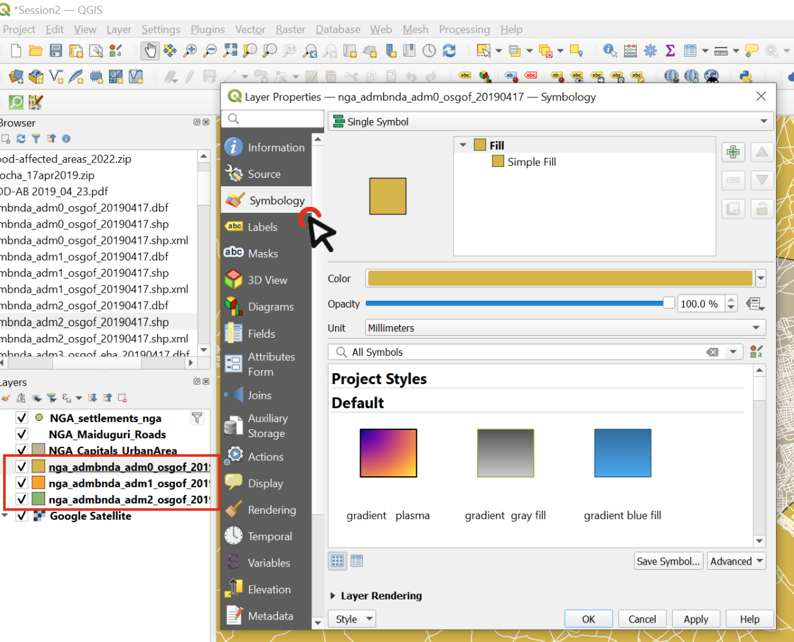
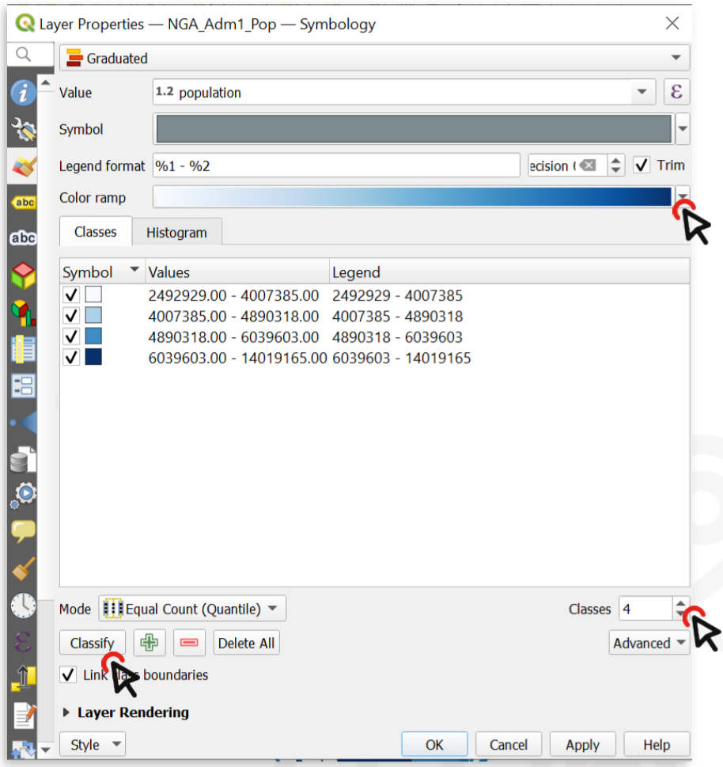
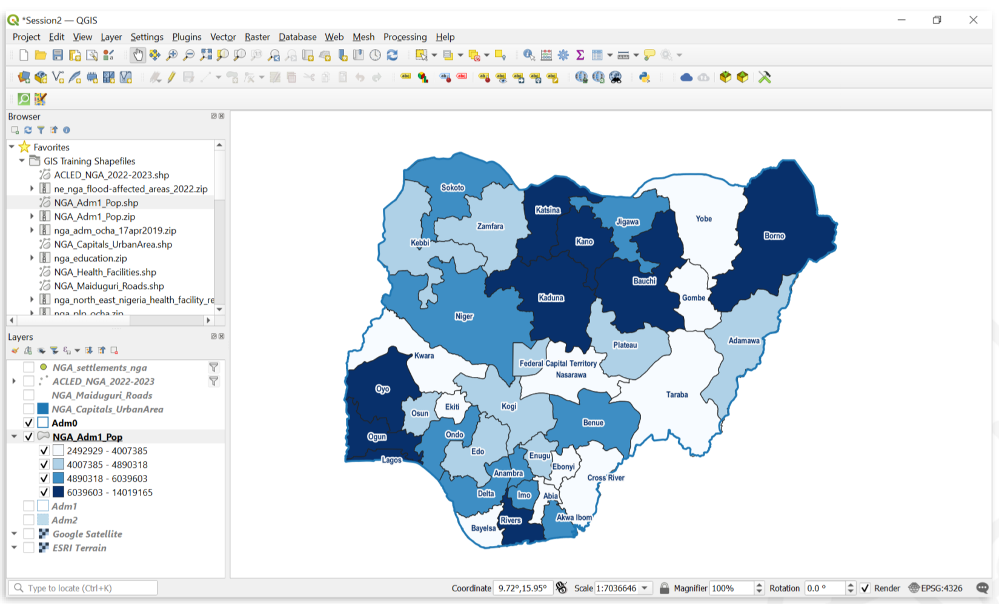
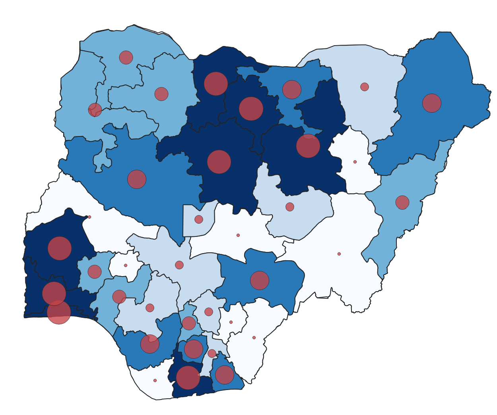
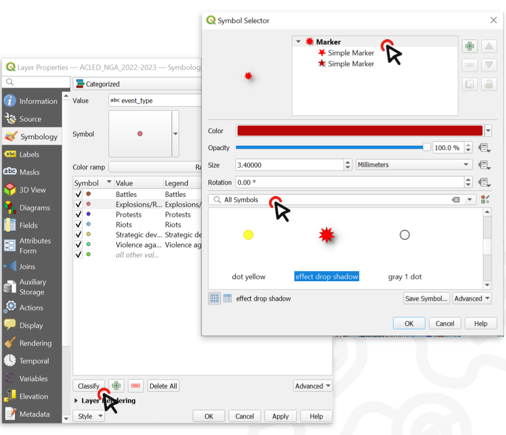

Styling Vector Data#
The previous chapter went over the fundamentals of graphical symbolisation and the visual variables. In this chapter, we want to apply our understanding of visual representation and learn how to use the styling panel in QGIS to customize how the layers in your QGIS project are visualised.
Styling Panel#
{kind=link}

Styling panel in QGIS 3.30.2.#
For each layer in QGIS, there is a styling panel where you can change the symbology, colour and label for the features in that layer. There are two ways to open the layer styling options in QGIS:
Right click on the layer you wish to style and select
properties. A new window will open up with a vertical tab section on the left. Navigate to thesymbologytab.Open the layer styling panel by enabling it under
View>Panels>Styling Panel. Usually, the panel will appear on the right side of the map canvas.
On the left of the styling panel you can choose the different tabs to access different styling options.
In the styling panel you can change the styling for all features of a layer, set up categories for different symbols, create labels, and create colour ramps to differentiate between features with variable values.
Video: Opening the styling panel
Symbology for Vector Data#
You can use graphical variables to style vector data. As we have already learned, vector data can be either points, lines, or polygons. There are different options to symbolize these different types of vector data.
{kind=link}

Symbolization for vector data; Source: White, T. (2017). Symbolization and the Visual Variables. *The Geographic Information Science & Technology Body of Knowledge (2nd Quarter 2017 Edition), John P. Wilson (ed.). DOI: 10.2222/gistbok/2017.2.3 .#
Note
Remember that the layer’s symbology is saved within your project file, not within your shapefile! If you share a shapefile with a colleague, it will have a different style when they add it to their own project.
QGIS let’s you visualise data using simple markers, SVG-files or Raster-files. Most commonly, you will work with simple markers. These are generally used to create the symbols for most elements on a map. For example, simple markers are used to visualise streets, building outlines, waterbodies, administrative boundaries or other polygons. Most simple markers consist of a fill and an outline. Depending on the type of geometry in the layer, you will have to use have different symbology options.
The fill determines the fill colour of the symbol. You can change the colour and transparency. You are also able to make more complex fills such as a line pattern fill, or an SVG-symbol fill.
The outline determines the colour, type, and thickness of the outline. Next to the colour and transparency, the outline is the most critical for distinguishing between different elements. For example, thicker lines for roads usually signify roads of a higher order (such as highways), while thin dashed lines might signify footpaths, inaccessible to road vehicles.
You can either style a single symbol for each layer or use different styles based on a categorisation method.
In the Symbology Tab, you can select between various symbolization methods (see en_3.36_m4_symbolisation_methods). The most important ones are Single Symbol, Categorised, Graduated, and Rule-based.

Assigns one symbol to every feature of the dataset, no matter if the attributes are different.
For example, assign a hospital symbol to a layer that only contains points showing the location of hospitals.
Classifies features into categories using an attribute (
Value).A category is created for each unique value of this attribute.
Each category can be assigned to a different symbol.
This can be used for nominal as well as ordinal data.
For example, assign a different symbol for each type of building (industrial, commercial, public, residential,…)
Creates classes for numerical data.
A colour gradient can be selected to represent the distribution of the data.
For example, create 6 classes of population sizes and assign a color gradient from white to red to indicate the population size in a district (see Module 3: Geodata Classifification).
Create rules using an expression and assign a symbol for the features where the rule applies.
You can specify more accurately the features you want to symbolize.
You can use values from different attributes (e.g. building type and city district).
The expression builder helps you create rules by displaying the available values, fields, operators, etc…
For example, select a symbol for every health facility that is a hospital and has exceeded it’s capacity.
Below, we will go over some common styling methods used in cartography.
Styling administrative boundaries (Polygons)#
When creating situational reports, you will frequently use administrative boundaries. In the example below, we want to create an overview map using the administrative boundaries of Nigeria. In order to visualise all the three administrative boundaries at the same time, we need to set the symbology for each layer so the layers below are visible, and the hierarchy of the administrative levels is distinguishable.
Optional: Now it’s your turn
You can follow along by downloading the administrative boundaries of Nigeria by OCHA Nigeria.
Only display the outlines of polygons#
Now, we want to change the symbology of a layer so that only the outlines of the polygons are visible. This is necessary to make layers below this one visible.
To change the symbology of a single layer:
Open the
Styling paneland navigate to the symbology tab. By default, the symbology will be set toSingle Symbol. This means that the same colours and contours will be applied to all the features in that layer.Click on
Simple Fill.Click on the arrow to the right of
Fill Colour.Check the
Transparent Filloption.

Video: Making the fill colour transparent
Adjusting the Styles of Multiple Overlaying Layers#
Step 1: Ordering the layers
Import the administrative boundaries into your QGIS-project.
We need to order the layers in the Layers panel so that the
adm0-layer sits on top, followed byadm1andadm2. At first, this might look weird becauseAdm0will cover everything.
{kind=link}

Order the layers and navigate to the styling panel of the topmost layer#
Change the symbology of the Adm0 layer by opening the styling panel and navigating to the Symbology tab.
Click on
Simple Fillto open the style options.Expand the
Fill Colourmenu and check theTransparent Filloption. This will make only the boundaries visible, so we will be able to see the layer under this one.Choose a
Stroke Colour, and make theStroke Width0.66 Millimeters.Click OK.
Repeat the same process for the Adm1 layer, using the same colour as for Adm0 (it will be in “Recent colors) and leave the stroke width at 0.26.
Now we can see the boundaries of the country and its states, and behind that we can see the districts (Adm2).
Let’s make the district layer’s style consistent with the others.
Choose a
Fill Color.Use the same Stroke Colour` as for Adm0 and Adm1, but make the width 0.1 Millimeters and the Stroke Style a Dash Line.
Click OK and look at your map: hopefully it’s starting to look nicer!

The styling of a vector data consists of the colour and the outline.#
Video: Adjusting the style for multiple layers
Creating a Choropleth Map (“Gradudated Styling)#
If a layer contains numeric values that are continuous, they can be organized in intervals. These intervals can be displayed in graduated colours. In this exercise, we assign colours to Adm1 polygons based on the total population of each State.
Download the NGA_Adm1_Pop shapefile and save it in your shapefile folder.
In QGIS, turn off the Adm1 and Adm2 layer, leaving only Adm0.
Drag the shapefile NGA_Adm1_Pop into your map.
Open its
Symbologyoptions and chooseGraduated.Select the value you want to use to assign colours, in this case, it will be
total_pop.

With variable ranges, select Graduated symbology and choose the attribute with continuous values#
Click on
Classifyto list all values divided in classes.Choose how many classes you want the data to be divided into ‒ let’s say 4.
By default, the colour ramp will be red. However, red is not the right colour to use for population count, as it is generally used to communicate negative elements, such as food insecurity or cholera cases.
Click on the arrow next to the colour ramp to choose another combination of colours - let’s say a color ramp from white to blue.
Click
Applyto preview the look of your layer, thenOK.
{kind=link}

You can categorize the continuous values into classes and assign a colour ramp .#
The following map shows the most populated States of Nigeria using a graduated colour categorization. These types of maps are called Choropleth maps.
{kind=link}

A map showing the population of Nigerian states.#
Video: How to create a choropleth map
Creating a graduated symbols map#
Graduated Symbols are useful when you have more information on your map, and creating a choropleth map is not possible,
or in situations when you want to communicate two variables on a single map. For example, it is easy to combine
choropleth maps with graduated symbols.
Creating graduated symbol maps is done in a similar way to creating choropleth maps, but it involves one extra step:
Creating Centroids of the administrative boundaries. Centroids are points that are placed at the calculated centre of
polygons (see Module 5).
We will be using the same layer as for the choropleth map (see en_map_design_example_variable_ranges):
NGA_Adm1_Pop.
In the processing toolbox, search for the tool
centroids. Double-Click on it. A new window will open (seeen_3.36_m4_centroids)

Creating centroids in QGIS 3.36.#
Under
Input Layer, select theNGA_Adm1_Pop-layer. Click onRun.A new point layer called
Centroidswill appear in your layers panel. Open its styling panel and navigate to the symbology tab.Set the symbolisation method to
Graduated.Under Value, select
total_pop.Change the Method from
ColourtoSize.Click on
Classify.Optional: Change the Colour and Transparency of the Circles.
{kind=link}

A map of Nigeria displaying the same data. Once using graduated colours (choropleth) and graduated symbols (proportional circles).#
Video: How to create a proportional circles map
Using different styles in a single layer#
By categorizing or classifying data in a single layer, we are able to assign different styles to each classification. We can use symbology to show the difference between features in the same layer. For example, it could be different types of buildings, quantities of Covid cases by district, or types of roads. We can choose a specific attribute of a dataset to assign different colors, outlines, or sizes to features:
Setting different point symbols for different features#
Download the ACLED security incidents geopackage and load it into your QGIS-project. It is a point layer with each point indicating a distinct security incident.
Open the
Symbology tabfor that layer and chooseCategorizedinstead of Single Symbol.
Note
Categorized symbology is used when you have discrete variables.

Change the symbology type to “categorised” and choose the Value (variable) you wish to display.#
Now we need to choose which attributes we want to display through the symbology. In this case, it could be the number of casualties, or the actor who perpetrated the act. Let’s categorize the features by
event_type.Click on
Classifyto list all the unique values contained in theevent_typefield (i.e. all the possible types of security incidents recorded in our table).Now we can change the style of each single value.
Double click on the value
Explosions.At the bottom of the Symbol selector window, choose a symbol to make Explosion points stand out.
Click on
OK, then Apply to preview what the layer will look like.Click
OKagain.
{kind=link}

By double clicking on the unique values in the classified list, you can change the symbol for each value.#
Now we have a map of Nigeria where you can locate the areas that are affected by explosions more than others. On the map below, we also added text labels, which will be explained below.

Regions affected by explosions in Nigeria.#
Video: Set up different symbols in a single layer
Simple Markers, SVG-Symbols and Raster images
On top of simple markers, QGIS lets you also use SVG-symbols and raster images as symbols for your vector data.
Simple markers are simple shapes such as rectangles, circles, or crosses that can be adjusted in the symbolization layer (colour, size, outline, etc.). Most of your styling in QGIS will be done with these markers.
SVG-symbols are scalable vector graphic symbols. As vector files, they can be scaled to any size while keeping the same resolution. In most cases, if you want to use a more complex symbol (e.g. hospital, school, train station), SVG-symbols are the best option as they let you adjust the symbol (colours, outline, size, etc.).
If you select raster images, the resolution of the symbol is limited by the amount of pixels in the image. It is not advisable to use high resolution images as symbols on your map because it may overload your PC.
Using SVG-Symbols and IFRC symbols#
Using SVG-Symbols#
In some cases, you might want to use more complex symbols in your map. For example, you want to use a cross to signify a hospital, a book to signify a library, or a plane to signify an airport. In these cases, you can use SVG-symbols. Keep in mind that, ordinarily, SVG-symbols work only for point data. To use SVG-symbols:
Open the styling panel and open the
single markeroptions.Under
Symbol layer type, select “SVG Marker”.Scroll down to the SVG-Browser. Here you will find all the folders of your installed SVG-libraries.
There is already a default library of SVG-symbols. If you are looking for a specific symbol, try searching for it in the search bar.
Adding an external SVG-library#
QGIS also offers the option to add your own SVG-libraries, for example if your organisation uses a specific set of icons. If you have a library of SVG-symbols as a folder you can add them to your Styling manager.
Open the style manager:
Settings>Style Manager.Click on
Import / Exportand selectImport items.Navigate to the location where you have saved the library or style and select the file (in most cases .qml but the file type can also be .xml).
Now you can select which symbols you wish to import. In most cases, you can select all symbols.
Click on
Import.
The new SVG-symbols are in your SVG library.
Using IFRC-Symbols#
IFRC- and UN-Symbols repositories
The IFRC provides icons and symbols that can be used in your maps. You can find them under this link.
There is also a library with humanitarian icons by the United Nations Office for the Coordination of Humanitarian affairs which can be found here. The files are available in different formats you can use in QGIS.
Self-Assessment Questions#
Test your knowledge
Name and describe the four main symbolisation methods used for vector layers.
Answer
Single Symbol
All features use the same symbol (same colour, size, stroke) regardless of their attributes.
Categorised (Unique Values/Categorical)
Features are styled by discrete categories (attribute values). Each unique value (or class) gets its own symbol (hue, shape, etc.).
Graduated Symbols
Numeric (continuous) attributes are divided into classes (value ranges), and each class is given a symbol (often with a colour ramp). This is used to show variation in quantitative data.
Rule-based
Users define one or more rules using the expression builder that determine which features get which symbol. Rules can combine attribute and spatial logic, allowing complex conditional styling.
Where is a layer’s symbology saved?
Answer
The symbology of a layer is not saved in the dataset. If you share only the dataset with a colleague, the layer will not appear as on your computer.
The symbology is stored in the QGIS project file (
.qgzor.qgs).It is also possible to export or save the style externally (as a
.qmlfile) so that it can be reused or shared.
When styling polygon layers (e.g. administrative boundaries), what is the purpose of using transparent fill and visible outlines?
Answer
Context: The transparent fill allows underlying layers (e.g. basemap, imagery, labels) to show through giving spatial context.
Boundary emphasis: The visible outlines (strokes) clearly indicate the polygon borders, even if the fill is subtle.
Hierarchy and legibility: If many overlapping polygons or adjacents regions are shown, transparent fills prevent areas from blocking each other, while outlines keep boundaries distinct.
Explain how to create a choropleth map in QGIS using graduated colours. What do you need to choose (e.g. attribute, number of classes, colour ramp)?
Answer
Right-Click on the layer and select
Propertiesand navigate to theSymbology-tab.Change the symbolisation method from
Single-SymboltoGraduated.Next to
Value, choose the numeric attribute you want to visualise in the choropleth map (e.g. population density, percentage, precipitation, normalised diseased cases, etc.). The value of this attribute will determine the colouring.Choose a classification method and set the number of classe (e.g. equal interval, quantile, natural breaks, etc.).
Pick a colour ramp suitable for the information you want to visualise (light → dark).
Click
ClassifyandApply.Take a look at the map canvas and make necessary adjustments (e.g. remove the polygon outlines).
What are SVG symbols, and what advantages do they offer over raster images for point symbology?
Answer
SVG (Scalable Vector Graphics) symbols are vector‑based icons or graphics that can be used for symbolising points in QGIS.
Advantages:
Scalability without loss: SVGs scale smoothly (zoom in or out) without pixelation or blurring, whereas raster images degrade when resized.
Editable/styleable: You can change colour, stroke, fill, size dynamically because the symbol is vector-based.
Sharpness on print: They maintain crisp edges at any resolution, making them better for cartographic output.